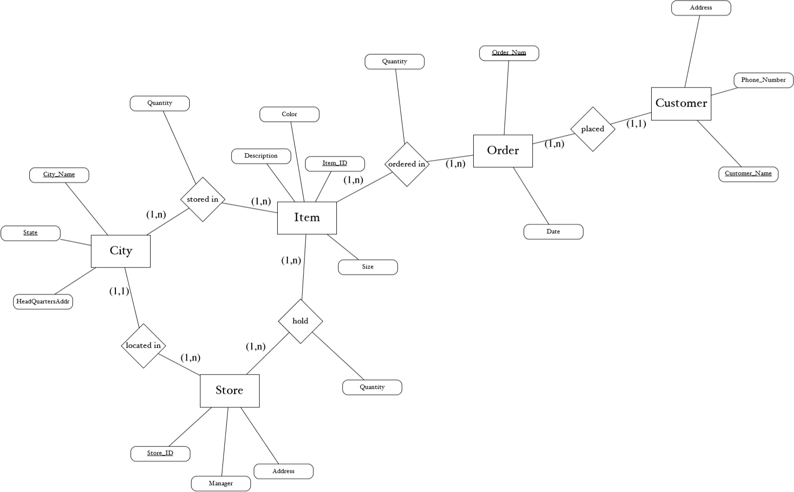

Assignment 3 - ER Diagram to Third Normal Form
Introduction
For this assignment, you will be converting the following ER diagram, which models the operational data for a department store, to a set of relations that conform to Third Normal Form (3NF).
Use the steps from the slides that we went over in class.
Make sure to indicate the primary keys by underlining them.
Include a list of which attributes are foreign keys, with the home relation of each foreign key indicated.
ER Diagram

Third Normal Form
Entities:
-
City(City_Name, State, HeadQuartersAddr)
-
Store(Store_ID, Manager, Address, City_Name†City(City_Name), State†City(State))
-
Item(Item_ID, Color, Description, Size)
-
Order(Order_Num, Date, Customer_Name†Customer(Customer_Name))
-
Customer(Customer_Name, Phone_Number, Address)
More-than-binary Relationships:
-
ItemsStoredInCities(Item_ID†Item(Item_ID), City_Name†City(City_Name), State†City(State), Quantity)
-
StoresHoldItems(Store_ID†Store(Store_ID), Item_ID†Item(Item_ID), Quantity)
-
ItemsOrderedInOrders(Item_ID†Item(Item_ID), Order_Num†Order(Order_Num), Quantity)